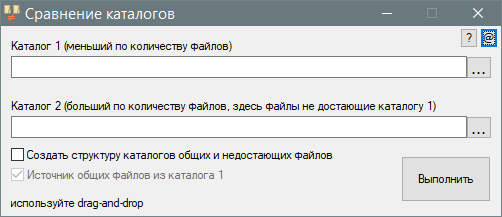

Compare
Назначение
Утилитка сравнения папок.

Взаимосвязанные
Synchronization
Утилита для сравнения двух каталогов. Утилита не производит ни каких действий с файлами, а создаёт список общих и недостающих файлов. При отметке создания структуры каталогов файлы копируются (не перемещаются) в отдельный каталог в текущей папке, при этом с оригинальными файлами не происходит ни каких действий.